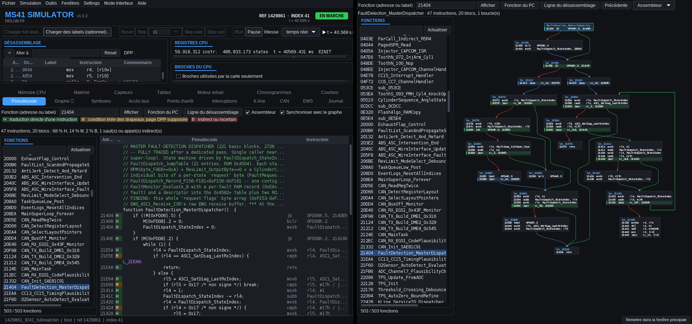
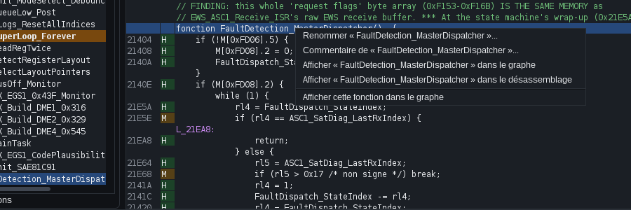
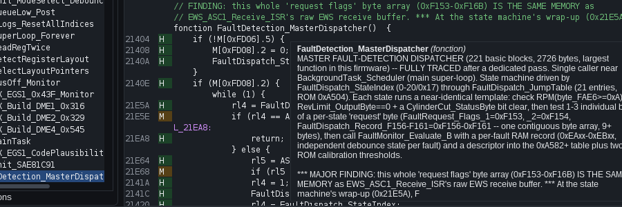
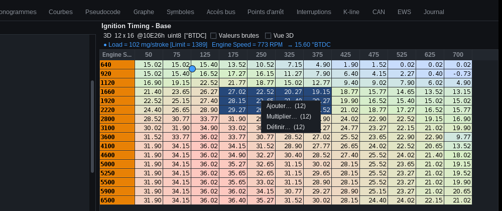
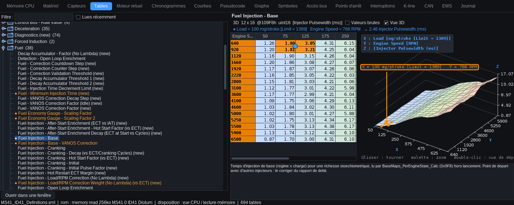

MS41 Simulator
Simulator of the BMW MS41.0 engine ECU (Siemens SAB80C166W processor at 12 MHz). It runs the real firmware read from the ECU, instruction by instruction, with its peripherals, a virtual M52 engine wired to its pins and a K-line for diagnostic tools.
What you can do:
- step through the firmware instruction by instruction (disassembly, registers, memory, breakpoints);
- see live which cells of the calibration tables (RomRaider definition) the ECU reads;
- run a virtual M52 or S52 engine (B20, B25, B28 or US M3 S52B32): starting, regulated idle, accelerations, sensor faults;
- hear it (synthesized sound, pops on lift-off), turn the ignition off and back on as on the car;
- put it on the power dyno: torque and power curves measured at the brake, compared with an estimate derived from the tables;
- watch the signals on the pins (timing diagrams) and how the sensors change over time (curves);
- talk over K-line with the simulated ECU, directly or with the integrated MS41 ECU Tool (identification, faults, flash read and write).
Click an image to enlarge it. The red numbers on the screenshots refer to the lists below each image.
About. No BMW software, document or code ships with the simulator: it is a hardware emulation of the board (processor, memories, address decoder, peripherals) and of a virtual engine wired to its pins. Everyone provides their own files: the full read of their ECU (binary) and, if they wish, their labels and their RomRaider definition. The project is vibe coding (code written with an AI, Claude), backed by a large documentation and reverse-engineering effort done before, during and after: reconstructed board schematic, measured decoder equations, datasheets, tests compared with the real hardware.
Code and tracking on GitHub: github.com/Diolum/MS41-Simulator-M52 (report a bug or suggest an improvement through the issues).
CC BY-NC-ND 4.0 license:
use and share as-is with attribution to the author, no commercial use and no modification (LICENSE file).
Quick start
- Launch the simulator: double-click MS41Simulator.jar (Java 8 or newer). The MS41 SIMULATOR startup window is shown while the main window is being prepared.
- Load a full read: File > Load full read… (or the toolbar button). Any 256 KB dump will do, raw chip read or CPU view: the format is detected automatically. A RomRaider definition (XML file) placed in the simulator's docs/definitions folder is loaded automatically; otherwise File > Load a RomRaider definition. Without a definition, everything works except the Tables tab, the recognition of the injectors intended by the map and the dyno estimate from the tables.
- Choose the engine in the Virtual engine tab: M52B20, B25 or B28, and the injectors fitted. The map cannot be used to guess the engine; the choice is remembered.
- Click "Start" in the same tab. The engine is connected, execution (Run) is started and the starter is cranked until the engine runs on its own (usually within 1 to 2 s). Choose the real time speed to watch the engine evolve at its own pace.
- Play with the engine: Throttle slider, temperatures, simulated faults. Follow the result in the Curves and Timing diagrams tabs, and in Tables (read cells in orange).
- Diagnostics: Tools > MS41 ECU Tool for identification, faults and live data.
How to use each tab and each window
This part answers "I want to do this, where do I go?" and then gives, for each tab and window, a short procedure. The details of every setting are in the matching section (links at the top of each entry).
| I want to… | Where |
|---|---|
| run the engine, start it, stop it, simulate a fault | Virtual engine |
| see how a value changes (RPM, air, lambda, spark advance…) | Curves |
| see logic signals (crankshaft, coils, injectors…) and measure a gap | Timing diagrams |
| know which cell of a map the firmware is reading right now | Tables |
| change a sensor (trigger wheel, throttle, temperature curves…) | Sensors |
| measure torque and power | Power dyno |
| read identification, fault codes, live data, read or write the flash | MS41 ECU Tool (or K-line for raw frames) |
| read the firmware code | Disassembly, Pseudocode, Graph |
| give a name or a comment to a variable or a function | right-click in these three views, or in Symbols |
| stop when the program reaches a place or touches a variable | Breakpoints |
| find who reads or writes a variable | Bus access, CPU memory |
| see which interrupts are being served | Interrupts |
| see CAN bus frames, simulate an automatic gearbox | CAN |
| understand the immobilizer, test a start refusal | EWS |
| look inside a chip of the board | Hardware |
| read the simulator's messages | Log |
Driving the engine and the simulation
Virtual engine (details)
- Load a full read (File > Load full read…), choose the mounted engine and injectors.
- Click Start and choose the real time speed in the toolbar. The start result (time, or the reason for failure) is shown in the tab.
- Set Throttle, temperatures, battery… with the sliders; to explore the tables at a precise point, switch to the Fixed RPM mode and set the speed and the throttle.
- Tick a simulated fault to provoke a fault code; the Diagnosis line says what prevents the engine from running, and the firmware readings show what the ECU sees.
- Turn off the ignition to see the run-on period and the EEPROM save; tick Ignition (+15) again to power the ECU back on.
Engine window (Engine settings…, details)
- One sheet per engine: read its specifications, Simulate this engine to fit it.
- Custom tab: enter displacement, filling, friction, injectors, Apply, tick Simulate this engine / Fit these injectors. The effect is immediate; follow it in the Curves.
- Set the atmospheric pressure (or the altitude), the fuel pressure and the VANOS delay in the Conditions.
Power dyno (details)
- Choose the kind of measurement: Pull (continuous RPM ramp), Step sweep or Held speed.
- Start; the engine is started if needed. The torque (blue) and power (red) curves are drawn and the summary compares with the manufacturer's figures.
- Keep as reference before changing something (map, injectors, altitude…) to compare afterwards; Export CSV to keep the points.
Sensors (details)
- Pick a sensor in the left list: its sheet gives the principle, the BMW part number and the characteristics.
- Change what is adjustable (trigger wheel and sensor type for the crankshaft, throttle limits and law, temperature and air-flow meter curves), then Apply.
- The status bar shows SENSORS MODIFIED as long as something differs from the original; Original or Reset everything to original undoes it.
Observing: values, signals, maps
Curves (details)
- Choose the displayed channels (sensors, pin voltages, actuators, per-cylinder channels, firmware variables).
- Set the displayed duration. Blip the throttle in the Virtual engine tab and watch the tracks react.
- Freeze the display to read it: recording continues. Hover a track: the cursor gives the value of all tracks at the same instant.
- Export CSV to keep the whole recording (opens in Excel).
Timing diagrams (details)
- With the engine running, leave Lock to cyl. 1 TDC ticked: the picture stays stable.
- Choose the signals with Channels… and the duration with Window.
- Freeze (or pause), then click an edge to place a marker and a second one to read the gap in ms, the frequency and the angle; right-click removes a marker.
Tables (details)
- In the left list, choose a table (or use the filter, or Read recently to see only those the firmware is reading).
- Watch the orange cells (read by the CPU) and the blue dot (exact position between the cells).
- To change several cells at once: select the range, right-click, then Add…, Multiply… or Set….
- Double-click a value to edit it: type, Enter; it is written to the simulated flash and the firmware sees it at once (Raw values to enter the byte).
- Tick 3D view for the relief; double-click the table in the list to open it in a window and follow several at once.
CPU memory (details)
- Use the zone buttons (vectors, identification, calibration, code, CAN, external RAM, internal RAM, SFR) or Go to an address.
- With the engine running, bytes read turn orange and bytes written turn red: you immediately see which variables are alive.
- Right-click a byte: memory breakpoint on write, on read or both.
Hardware (details)
- Choose the chip sub-tab (CPU, Flash, RAM, PLCC, EEPROM): its description, its pins and its live content.
- Go to an address or Last access; double-click a byte to change it (the firmware sees the new value); Save… / Load… to save or replace the chip content.
CPU pins and CPU registers (pins, registers)
- In the pins, find the signal by its function on the board or its X6000 number; tick "Pins used by the board only" to shorten the list.
- Double-click an input: toggles it; double-click an analog input AN0-AN9: sets its voltage (useful to test a sensor without the virtual engine).
- In the registers, follow PC, stack, PSW and register banks during single-stepping.
Interrupts (details)
- On the left, find the source (CAPCOM, timer, ADC, serial link); the columns give the enable bit, the pending request, the priority and the number of times it has been served.
- A source whose counter does not move is not armed or never fires: useful to check that a hardware event reaches the firmware.
- On the right, the 8 PEC channels (automatic transfers): counter, size, source, destination.
Reading the code, naming, following execution
Disassembly (details)
- Type a hex address or a name in Go to; < goes back; Reset goes to the entry point.
- Tick Follow execution: the view centres itself on the current instruction, even while the CPU is running.
- F7 / F8 / Shift+F8: single-stepping; F2 sets a breakpoint on the line; F4 runs to the line.
- Double-click a jump or a call to go there. Right-click: menu (breakpoint, run to here, set PC, rename, comment, show in graph / pseudocode).
Pseudocode and Graph (pseudocode, graph)
- Choose the function in the left list (filter by name or address), or Function at PC, or Disassembly line.
- In the pseudocode, the H / M / B marks tell how reliable each line is; Assembly shows or hides the original instruction.
- In the graph: wheel = zoom, drag = pan, Fit = see everything, double-click a call = the called function; Previous goes back.
- Tick Follow execution so the view accompanies the PC, and Synchronise so pseudocode and graph show the same function (see below).
- The current instruction is always orange, and so is the current function in the list. Also tick Settings > Highlight explored code (unticked by default): recently executed code is tinted turquoise (also in the function lists), you see the path really taken.

Symbols (details)
- Filter by name; double-click: the address is shown in the disassembly.
- Right-click: rename or comment. File > Save labels keeps the work in the
data/labelsfolder, reloaded automatically for the right software version.
Renaming and commenting (details)
- Right-click the word (variable, function, label) in the disassembly, the pseudocode or the graph.
- Rename…: the new name appears everywhere at once. Comment…: free text, shown on hover over the word.
- Show in graph / pseudocode / disassembly switches between views on the same function.


Debugging: stops and accesses
Breakpoints (details)
- Code: enter an address or a label name, Add; or F2 on a disassembly line. The Active box keeps the point without using it. Delete removes the selected one.
- Memory: enter an address (or range), read / write, optionally a value. Example:
E655written withAAstops at the end of the start-up checks. - When a stop happens, the header shows STOPPED: BREAKPOINT; Run resumes. The Hits column counts the stops; Clear all resets everything.
Bus access (details)
- Set the filters before capturing: zone (for example RAM int), Reads / Writes, hex address range.
- Choose the buffer size and Circular (the latest accesses) or Stop when full (the first ones after Clear).
- Run the simulation: the Instr. column tells which instruction accesses; double-click it to go to the code.
Log (details)
- Check it when loading a full read: wrong checksums, chosen definition, label file recognised for the software version.
- It also keeps hardware traps, breakpoint stops and the connection of MS41 ECU Tool.
Communicating: K-line, CAN, EWS, ECU Tool
K-line (details)
- Start Run (the ECU only answers while it runs).
- Type a DS2 frame in hex without checksum (added automatically):
12 04 00= identification,12 05 04 00= fault codes. - Read the answer in the list (direction, simulated time). Auto scroll follows the bottom of the list.
- The MS41 ECU Tool button opens the complete tool connected to the same line.
Integrated MS41 ECU Tool (details)
- Tools > MS41 ECU Tool: the tool opens already connected ("MS41 Simulator (USB)", 9600 baud); the simulation switches to real time and Run must be started.
- Open the communication at idle (above 2000 rpm the ECU ignores the request), then identification, fault codes, live data, actuator tests.
- To read or write the flash in Fast mode, the engine must be stopped; turn the ignition off and on (Virtual engine tab) to leave service mode.
- After a write: File > Save modified binary….
CAN (details)
- The table shows the last frame of each identifier (DME1, DME2, DME4), decoded.
- Tick Other ECUs on the bus so frames are acknowledged; CAN H / CAN L short circuit causes a bus-off.
- For an automatic gearbox: tick Automatic gearbox (EGS), set the gear code and the torque reduction, then turn the ignition off and on (the ECU only detects the gearbox at power-up).
EWS (details)
- By default AUTOMATIC EWS is ticked: starting is always allowed.
- To test a refusal: untick it, Write another ISN (or EWS from another car), then turn the ignition off and on: starting is refused and code 209 is set.
- The exchange log shows every message (ISN sent, ISN expected, result); the EWS unplugged and corrupted checksum faults give code 18.
Windows and menus
- Separate windows (details): double-click a tab (or right-click > Open in a separate window, or the Windows menu); the tab stays marked ↗. To dock it back: close the window, or Dock here. Positions are restored at the next launch.
- Interface modes (details): Interface mode chooses the tabs shown, from Extra simple (engine, curves, timing diagrams, K-line) to Advanced (everything).
- Settings (details): engine sound (mute, volume, exhaust), dark or light theme, Gamepad… to drive the engine with a gamepad, MCP server to drive the simulator from Claude.
- Toolbar (details): Reset, Step (with the number of instructions per step), Step over, Step out, Run, Pause; simulation speed on the right (real time, max, 1/10 to 1/1000).
The main window

- Menus: File, Simulation, Tools, Windows, Settings, Help (see Menus and shortcuts).
- Header: loaded calibration (part number and index), simulated time and simulation status pill (see Appearance).
- Toolbar: loading, Reset, Step (with the number of instructions per step), Step over, Step out, Run, Pause.
- Speed of the simulation in Run: real time (12 MHz, simulated time follows the clock), max (as fast as possible) or slowed (1/10 to 1/1000, to follow the signals by eye).
- Simulated time and execution speed (millions of instructions per real second).
- Disassembly of the firmware around the current instruction.
- CPU registers: PC, IP, CSP, PSW, stack, register bank…
- CPU pins: state of each pin, frequency and duty cycle of the signals, analog voltages.
- Bottom tabs: each can open in its own window (double-click the tab).
- Status bar: loaded file, format (raw / CPU view), calibration part number and index.
Interface modes
Interface Mode menu: four levels, from the simplest to the complete software. The choice is kept from one launch to the next; the simulation keeps running while it changes.
- Extra simple: for playing with the engine. Only the Virtual engine, Timing diagrams, Curves and K-line tabs, which fill the whole window; no disassembly, no registers, no pins, no step-by-step buttons.
- Simple: without disassembly, pseudocode or graph (nor CPU memory, symbols, bus access, breakpoints, interrupts); the pin states, hardware, sensors, tables, CAN, EWS and log are kept.
- Normal: everything except the pseudocode and the graph.
- Advanced: the complete software (default mode).
A hidden tab opened in a separate window is returned to the main window; the Windows menu lists only the tabs shown. Speed: at launch, the simulation is in real time; in the extra simple and simple modes it is always in real time and the speed selector is hidden; in the normal and advanced modes the selector stays available (max, 1/10, 1/100, 1/1000).
Resources: what is not shown does not work. A hidden tab (another tab selected, or removed by the interface mode) is not redrawn and not updated; it updates as soon as it reappears again. The tracking of read cells (Tables tab), the activity of the units (Hardware, CPU memory) and the access log (Bus access) only watch memory while their tab (or its separate window) is shown: without them, the program's memory accesses cost nothing extra. The Curves and the Timing diagrams, on the other hand, always record, even hidden: when you return to them, you find what happened in the meantime. The lines of the K-line also wait and show up on return.
Appearance: dark or light theme
By default, the simulator has the look of MS41 ECU Tool: dark background, panels as rounded cards whose title is in blue underlined capitals, flat buttons, selected tab as a blue pill, light text. States keep their colors: green for what is going well (engine started, diagnostic byte accepted), orange for attention (light, read bytes), red for an error or a write. At the top, a header recalls the loaded calibration (part number and index), the simulated time and the simulation status in a pill: RUNNING (green), STOPPED (gray) or STOPPED: BREAKPOINT (orange). The Run button is blue.
Settings > Theme: Dark (MS41 ECU Tool style) or Light (system look), the previous appearance (without header). The choice is kept and applied at the next launch. The screenshots in this guide are made with the dark theme.
Running the firmware
| Command | Shortcut | Effect |
|---|---|---|
| Reset | Power-up and CPU reset (RAM cleared). | |
| Step | F7 | Executes 1 instruction (or the number chosen next to it: ×10 … ×100 000). |
| Step over | F8 | Executes the instruction; a function call is executed in full. |
| Step out | Shift+F8 | Executes until the current function returns. |
| Run | F9 | Continuous execution until Pause, a breakpoint or a hardware trap. |
| Pause | F6 | Stops execution. |
| Run to line | F4 | Run to the selected disassembly line. |
| Breakpoint on line | F2 | Sets or removes a breakpoint on the selected line. |
These shortcuts also work in the separate windows.
Disassembly

- Go to: a hex address (
430,0x20000) or a label name; < goes back; Reset goes to the entry point. - DPP: pages used to translate the 16-bit memory addresses (live CPU values, or values after initialization).
- Double-click a line: follows the jump or call, or shows in the Memory tab the data accessed.
- Right-click: breakpoint here (F2), run to here (F4), place the PC here.
- The Comment column gives the target of the jumps and the current value of the variables read (region and contents).
CPU registers

Instruction and cycle counters, simulated time, CPU state (EINIT = initialization finished), then the registers with their decoding (PSW flags, interrupt level, stack, register bank).
CPU pins

For each pin: direction (E input / S output), latch, level, and for the signals that change their frequency and duty cycle (coils, injectors, idle valve, VANOS…), with the function and the number on the X6000 connector. Double-click: toggles an input or sets an AN0-AN9 voltage. The list contains all the pins of the SAB 80C166W with their number on the package: ports P0 (bus) to P5, and special pins (crystal, bus configuration, reset, NMI, converter reference, power supplies). The CPU function column gives the function intended by the datasheet, the last column the use on the board; the pins the board does not use are in gray. "Pins used by the board only" hides the others.
The board's chips
The simulator reproduces the ECU board chip by chip. The Hardware tab at the bottom of the window has a sub-tab per unit: CPU SAB 80C166W, Flash 28F200, RAM U21 (6264), PLCC U22 (PALCE16V8) and EEPROM 24C04. The CAN controller and the satellite have no sub-tab: they are followed in their tabs (CAN, Sensors, EWS).
Each sub-tab has three parts:
- What is emulated: what the simulator reproduces of the chip, and what it does not reproduce.
- Pins: number (when the package is known), name, direction, state and function on the board. The bus pins show the state of the chip's last cycle (address, data, read or write); the others are live.
- Live contents: the bytes read by the program turn orange, those written red, and the color fades in 2 s (only data reads are colored, not the code read). Go to an address, Last access: the byte touched last. Double-click: edit a byte, as with an external programmer (the firmware sees the new value). Save… / Load…: the chip's contents in a file.
CPU Siemens SAB 80C166W

The ECU's 16-bit processor (MQFP-100 package, 12 MHz). It runs the firmware read from the full read, instruction by instruction.
- Emulated: complete instruction set, registers and register banks (CP), PSW, stack, interrupts and PEC transfers, GPT1 / GPT2 timers, 16-channel CAPCOM (capture and compare on the pins), 10-channel analog converter, ports P0 to P5, serial links ASC0 (K-line) and ASC1 (satellite), watchdog, external bus (flash in 16-bit, RAM and CAN in 8-bit). Time is counted in CPU states per instruction.
- Not emulated: exact bus wait states, power consumption.
- Hardware view: program counter, stack, last access, and the internal RAM (0xFA00-0xFDFF: registers R0-R15 of the banks, stack, firmware variables).
- Elsewhere: disassembly, registers, CPU pins (all the package pins, live), interrupts, memory as the CPU sees it, pseudocode.
Flash Intel 28F200

The program and calibration memory: 256 KB in 16-bit words, boot block at the bottom (blocks of 16, 8, 8, 96 and 128 KB).
- Emulated: contents in the chip's order, command interface (read, status register, identifiers, word programming, block erase), programming voltage VPP commanded by P2.6 (without it, the programming fails). The chip's A13 line is recomputed by the PLCC decoder: CPU address = chip address XOR 0x4000 (Chip and CPU columns of the view).
- Not emulated: programming and erase times (instantaneous), endurance. Package and pin numbers not surveyed on the board (signals only).
- Program the flash: as on the car, over the K-line with MS41 ECU Tool, or directly in the view (double-click, Load…). File > Save the modified binary… recovers the result in a file.
RAM UM6264A (U21)

The 8 KB external RAM where the firmware keeps its variables, addressed by byte.
- Emulated: selection by the PLCC decoder (pin 13), window 0xD800-0xF7FF on an 8-bit bus (a word access = two byte cycles), read and write. The contents are set to 0 at power-up (a real RAM starts with arbitrary contents; the firmware initializes it).
- Not emulated: access time, retention without power (the contents are lost when the ECU is turned off, see Ignition).
- Pinout: standard 6264, 28 pins (CE2 not surveyed on the board).
PALCE16V8 address decoder (U22)

The central address decoder: from the CPU's address bits, it selects the chip that responds (flash, CAN or RAM). The view gives the state of its 20 pins for the last address presented on the external bus, its equations and the memory map that results (flash, CAN 0xD000-0xD7FF, RAM 0xD800-0xF7FF, regions with no chip).
- Emulated: the four equations surveyed on the chip: flash selection, flash A13 line (recomputed), CAN selection, RAM selection.
- Not emulated: pins 1, 9, 12, 17, 18 and 19 (no effect on the board), propagation time.
Editable equations: the four outputs (pins 16, 15, 14, 13) are written with the inputs I1 to
I8 (I1 = A16, I2 = A14, I3 = A15, I4 = A12, I5 = A13, I6 = A11, I7 = A17, I8 held at 1), / for "not",
. for "and", + for "or", parentheses, and the constants 0 and 1. Program loads the
equations into the chip: the simulator's bus decodes with them at once (a wrong equation is refused with the
reason). The memory map updates. Equations different from the survey can prevent the firmware from finding
its flash, its RAM or the CAN: a confirmation is requested. Board survey restores the original equations;
Save… / Load…: text file, one line per pin (14 = /I2+/I3+/I4+I5+I6+I7+I1).
The modified equations last only for the session: the survey comes back at the next launch.
EEPROM 24C04

The 512-byte I²C serial EEPROM (2 blocks of 256) where the ECU keeps what must survive turning off the ignition: adaptations, fault memory, VANOS rest position…
- Emulated: bit-by-bit protocol on P3.3 (SCL) and P3.12 (SDA), address and block bit, internal pointer, byte and page write (16 bytes), current, random and sequential reads, acknowledgements. The bottom line gives the state machine's state, the pointer and the counters.
- Not emulated: write time (≈ 5 ms, immediate here), write protection (pins A1, A2 and WP not surveyed).
- Contents: blank by default (all FF), or loaded from a file: menu File > Simulated EEPROM (see Ignition, post-run and EEPROM).
CAN controller SAE81C91
The engine CAN bus controller, wired to the CPU's external bus (window 0xD000-0xD7FF, selected by the PLCC decoder). The firmware writes the DME1, DME2 and DME4 frames there and reads those of the automatic transmission there.
- Emulated: registers and message buffers as the firmware uses them, transmission every 10 ms, acknowledgement by the other ECUs, error-passive when the ECU is alone, bus-off on a short circuit.
- Where to see it: CAN tab (decoded frames, options), CAN region of the CPU memory tab.
ST9 satellite
The board's second microcontroller, linked to the CPU by the ASC1 serial link. It measures the air temperature, the knock sensors and the A/C inputs, commands the compressor relay, relays the messages of the EWS immobilizer and monitors the output stages.
- Emulated as a black box, from the messages the firmware expects (its own program was not read): synchronization and configuration, air temperature (message 0x108), knock (gain received in 0x101, cylinder level returned in 0x102), A/C and compressor relay, EWS messages 0x109, diagnostics of the 24 output stages (always without fault).
- Where to see it: cards of the Sensors tab (air temperature, knock, A/C), Knock, EWS tab; simulated fault "ST9 satellite unplugged" (code 100).
The bottom tabs
The Hardware tab is described with the board's chips.
CPU memory

Hexadecimal view of the whole addressable space as the CPU sees it: flash (in CPU order), CAN controller, external RAM, internal RAM, SFR registers, regions with no chip. It complements the Hardware tab, which shows each chip separately. The buttons jump to the useful regions: interrupt vectors, identification, calibration, code, CAN, external RAM, internal RAM, SFR. The background color indicates the region; the bytes read and written by the program are colored live during execution (the color fades in 2 s). Right-click on a byte: memory breakpoint on write, on read or both.
Sensors: characteristics of each sensor

The Sensors tab describes the hardware that turns a physical quantity into a signal for the ECU, and lets you modify it to simulate another sensor. The live values and the curves are not here: they are in the Virtual engine tab and in the Curves. Fifteen cards on the left: crankshaft (TDC trigger wheel), camshaft, HFM air meter, throttle (potentiometer), coolant temperature, air temperature, vehicle speed, lambda sensors, knock sensors, ignition feedback, battery, idle valve, injectors, camshafts, A/C pressure. Each card gives:
- the sensor's principle and its path to the ECU (pin, analog input or satellite);
- its part number and its characteristics. The BMW part numbers of the M52's parts (and of the US M3 S52 when it differs) are pre-filled with the characteristics published by the parts catalogs and the manufacturers (for example crankshaft sensor 12141703277 Hall-effect, Siemens air meter 5WK9600, Bosch injector 0 280 150 440 of 14.5 Ω); "not published" when no source was found. The two fields can be edited and are kept from one launch to the next;
- when the sensor is adjustable, its electrical characteristics: Apply takes them into account right away, Original restores those of the BMW sensor.
Crankshaft: number of teeth on the trigger wheel and number of missing teeth, with the drawing of the trigger wheel (teeth, gap in red, sensor position, tooth 0), and the sensor type: Hall effect (square 0-5 V signal, present even at rest) or inductive (alternating voltage whose amplitude grows with the engine speed; amplitude for 1000 rpm and input threshold adjustable). A table cross-references the two types with the chosen trigger wheel: signal, amplitude, minimum engine speed detected, edges used, supply, angular pitch, gap width. The inductive sensor's values are a model (not measured). The MS41 firmware expects a 60-2 trigger wheel: with another trigger wheel it does not synchronize and the engine does not start, as on the car; with an inductive sensor whose threshold is too high, there is no longer any signal at starter engine speed.

Throttle: voltage throttle closed and wide open, and the law of the potentiometer: linear, logarithmic (10 % of the electrical travel at half-travel) or anti-logarithmic; the graph shows the voltage versus the opening. Vehicle speed: pulses per km. Air meter, coolant and air temperatures: the sensor's curve in an editable table (add / remove points; the physical quantity must increase strictly), and the air meter voltage with no flow. The original curves come from the ID41 calibration, which describes the sensors fitted by BMW.
These settings are kept from one launch to the next. When one of them differs from the original, the status bar of the tab shows SENSORS MODIFIED; Reset everything to original returns to the BMW sensors (part numbers and texts kept).
Tables

- On the left, the tables of the RomRaider definition, by category. Filter to search by name; Read recently keeps only the tables the firmware is currently reading.
- On the right, the chosen table with its axes. The cells read by the CPU are highlighted in orange, live: you see the operating point move when the engine speed or the load change. Raw values shows the bytes instead of the converted values.
- Below the table, the description (role, firmware routine that reads it).
- Blue dot (2D and 3D tables): the exact position where the firmware is, which moves
between the rows (and between the columns in 3D). Below the title: the firmware's input value in the units of
each axis (for example Battery Voltage = 14.1 Volts) and the table value linearly interpolated at that
point. Where this position comes from: to find its interval, the firmware compares its input value, in a
register, with the axis points (
CMP/CMPBinstruction that reads the axis in memory). The simulated CPU reads that register at the moment of the comparison: no analysis of the program, no label, only what the instruction does. It is the firmware's value (measured engine speed, converted voltage...), which may differ a little from the physical value of the virtual engine. Gray dot: no new comparison for 0.5 s; no more dot after 2 s. - 3D view (3D tables only, disabled by default): the table in relief beside the grid, with its three graduated axes and their names in the cartouche at the top left. Drag: rotate it; wheel: zoom; double-click: starting view. The cells read by the CPU are marked in orange and a vertical arrow drops onto the surface at the exact point (same position as the blue dot), with the input values of the two axes. If the axes have not been compared (table read otherwise), it aims at the center of the cells read together (usually a 2 × 2 square). A read of the whole table (flash check) does not move it.
- Edit a value: double-click a grid cell (data, or an axis point when the axis is in flash), type the value in the displayed units (decimal comma or point), Enter: it is written to the simulated flash, and the displayed value is the nearest byte (definitions have no inverse formula); Esc cancels. With Raw values ticked you enter the byte itself. The firmware sees the new value immediately; File > Save modified binary… keeps it in a file (the original is never overwritten). 32-bit tables, switches and static axes cannot be edited here.
- Edit a range: select several cells (drag, or Shift + click; axis points are not affected), then right-click: Add… adds a constant to every selected cell, Multiply… multiplies them by a constant, Set… gives them all the same value. The constant is typed in the displayed units (or as bytes with Raw values ticked); each result is brought to the nearest byte and limited to the range of the type (0 to 255 for an unsigned byte, for example), and the number of modified cells is shown under the title. Nothing is written if the input is invalid. Same write as the double-click: simulated flash only, never the original file.
- Open in a window (or double-click the table in the left list): the table in its own window, to follow several at once.


Virtual engine

- Connect the virtual engine to the ECU pins (sensors as inputs, actuators measured as outputs). It is connected at the simulator's launch, in Free engine (model) mode.
- Start: does everything needed for the engine to start (connects the engine, launches Run, switches to free engine, cranks the starter until the engine holds on its own; gives up after 5 s with the reason).
- Starter (hold): starter cranked as long as the button is held. When cold, you must hold 1.5 to 3 s, as on a real car.
- Turn off the ignition: cuts the +15, like the key: the ECU stops the engine, keeps the main relay a few seconds (post-run, EEPROM save) then turns off (see Ignition, EEPROM).
- Ignition (+15): key state; re-checking powers the ECU back up (RAM lost, EEPROM re-read, new EWS exchange).
- Mode: Stopped, Starter (fixed engine speed of 220 rpm), Fixed RPM (the slider sets the engine speed, handy for exploring the tables), Free engine (engine speed results from the combustions and the friction).
- Engine mounted on the dyno: M52B20, B25, B28, S52B32 (M3 E36 US) or the custom engine (displacement, filling, friction).
- Injectors fitted: Bosch 0 280 150 415 (green), 440 (pink), M3 3.2 US S52 (BMW 13641703819) or custom, with their real flow and dead time. The US M3 injector is the same part as the 440 of the M52B28 (Bosch 0 280 150 440): same flow and dead time; it is chosen by default with the S52B32 engine.
- Engine settings…: opens the Engine window (cards of the M52s, custom engine and injectors, atmospheric pressure, fuel pressure, VANOS retard). Below it: Power dyno… (dyno). The immobilizer has its own tab, EWS.
- Injectors of the map: recognized by its dead-time table. If those fitted differ, the expected mixture offset is shown (e.g. "mixture leaner by 24 %").
- Start result (time taken, or reason for the failure).
- Sensors: fixed engine speed, throttle, coolant and air temperatures, vehicle speed, external load
(transmission…), battery, A/C pressure; automatic warm-up, automatic battery,
A/C requested.
Air conditioning: depending on the coding of the map, the ECU reads either the pressure sensor (above 5.7 bar: A/C idle; above 9.6 bar: compressor; beyond 24 bar: cutoff), or the "A/C requested" inputs. When it allows the compressor, the satellite latches the relay, the compressor takes torque from the engine (A/C compressor line of the readings) and bit 6 of DME1 goes to 1 in the CAN tab. With the throttle flat out, the ECU cuts it for about 4 s. The resting pressure is 5 bar.
Secondary air (US versions, MS41.1/MS41.2 maps like the ID12 M3): after a cold start (−10 to 40 °C), the ECU latches the pump relay (pin 35) and opens the flap's vacuum valve (pin 62), both driven by the satellite; an electric pump blows air into the two manifolds for about 2 minutes ("~90 s" in BMW training ST055). This air leans the gases seen by the upstream sensors (λ ≈ 1.1-1.5 instead of 0.7-0.9): this is how the ECU checks the system. It also oxidizes the unburned gases if the manifold is hot enough (afterburning). The Secondary air in working order box, unchecked, simulates a failed pump or valve. Secondary air line of the readings: relay, valve and air flow blown. The European maps (ID41) never command the secondary air. - Simulated faults: cut sensor (crankshaft, camshaft, air meter, throttle, temperature, lambda sensors, speed, ignition feedback), HFM hardware fault, ABS/ASC signals, satellite unplugged, EEPROM absent, EWS silent or from another car, VANOS stuck at rest or advanced (code 212). Useful for triggering the fault codes.
- Knock (below the sensors): fuel (91, 95, 98 or 100 RON), natural engine knock, knock induced on one cylinder or on all (intensity as a multiple of the engine noise, frequency in % of the cycles), sensor 1 (cylinders 1-2-3) or sensor 2 (cylinders 4-5-6) unplugged. See Knock.
- Engine values and firmware readings, side by side: engine speed, air, lambda, temperature, timing, idle valve, VANOS, tachometer, relay, light, A/C compressor, active faults, torque, secondary air…
- Diagnosis in plain language: "the engine is running", or what prevents it (immobilizer, lost synchronization, no injection, flooded mixture, starter released too early…).
- Actuators per cylinder, measured on the pins: injection duration, injection end, coil charge, timing, lambda of the last cycle, number of combustions, and for knock: margin to the knock limit, number of knocking combustions, level measured by the sensor, retard decided by the firmware.
Knock

Knock follows the same path as on the car: the engine knocks, the sensor transmits it to the
satellite, which measures each cylinder during the window opened by the ECU (P3.6, from 0 to 60°
after TDC) and returns a level (message 0x102). It is the firmware that compares this level to its
reference, retards the timing of the knocking cylinder, then brings it back little by little.
- Natural knock: the engine knocks when the applied timing exceeds its knock limit, which drops with the load, the air and water temperature, a low octane rating, a lean mixture or a stronger compression, and rises with the engine speed. The combustions vary from one cycle to the next: knock is intermittent. Original engine on 95: a few retards of 1 to 2° at full load around 3000 rpm; on 91, retard of 8 to 10°; on 98, none.
- Induced knock: added to the natural knock, on the chosen cylinder. Only that cylinder is retarded.
- Sensor unplugged: the satellite now receives only electrical noise for its three cylinders; the firmware memorizes code 57 (sensor 1) or 59 (sensor 2).
- Curves per cylinder: Engine knock (intensity of each combustion), Knock margin, Knock sensor level (value returned by the satellite), Firmware knock retard. On the screenshot: on 91 RON, each knock peak backs the timing off one notch, which climbs slowly back up to the next knock.
What is a model: the engine's knock limit and the satellite's internal processing (level scale, mechanical noise) are not measured on the car; they are tuned for realistic behavior.
Timing diagrams

The logic signals on the pins, as on a logic analyzer: 60-2 crankshaft and camshaft, coils, injectors (firing order 1-5-3-6-2-4), ignition feedback, tachometer, idle valve, VANOS, light, knock window (P3.6). Window: duration shown (500 ms by default: about three engine cycles at idle); Lock to cyl. 1 TDC (checked by default): the end of the window is locked to the last TDC of cylinder 1, the image stays stable; Freeze: stops the scrolling; Channels…: choice of signals. Hovering the mouse only draws a vertical line: it does not move the image.
Markers (simulation paused or Freeze checked): a click places a marker, snapped to the edge closest to the clicked channel; a right-click removes the closest marker; Clear the markers removes them all (8 at most). Below the plot: the gap between successive markers, the corresponding frequency and the crank angle (at the engine speed measured in the window, one camshaft edge per turn). Example: two rising edges of the tachometer at 900 rpm are spaced 22.2 ms apart, i.e. 45 Hz (3 pulses per turn).
Curves

- Channels shown: sensors in physical value, voltages on the ECU pins (AN0-AN9), engine and actuators, per-cylinder channels (injection, timing, coil charge, lambda of each combustion, engine knock, knock margin, sensor level, firmware knock retard, cylinders 1 to 6), values read in the firmware's RAM. The choice is remembered.
- Duration shown: from 5 s to 10 min of simulated time (the recording keeps the last 10 minutes, one point every 10 ms).
- Freeze the display to read calmly; the recording continues. Auto scale adjusts each track to the values shown (otherwise: fixed range of the channel). The pin voltages (0 to 5.2 V, full scale of the converter) and the battery (0 to 16 V) always keep their scale, marked (fixed). Cylinders overlaid: the checked cylinders of the same quantity on a single track, one color per cylinder, with the value of each one.
- Export CSV: the whole recording, all the channels (separator
;and decimal comma: opens directly in Excel). - Tracks: one per channel, with its own scale and its current value. When hovering with the mouse, a cursor gives the value of all the tracks at the pointed instant.
On the screenshot: two throttle blips. You see the engine speed rise, the air and the air meter voltage follow, the idle valve close, then the injection cutoff on deceleration (lambda at maximum).
Pseudocode

The Pseudocode tab translates a firmware function into pseudo-C, line by line, with the original instruction on the
right. It is produced by the simulator's disassembler (not by IDA). Enter an address or a label, or use
Function at PC (the function currently executing) or Disassembly line (the line selected at the top),
or click in the list of functions on the left (filter by name or address): functions of the labels file and
all the call targets found in the code (the list exists even without labels, with names sub_xxxxx);
the Assembly box shows or hides the instructions column;
the start of the function comes from the bounds of the labels file; without them, it is guessed (after the return that precedes it) and
it is indicated. Double-click a
line: the instruction in the disassembly. When stopped, the PC's line is highlighted.
- H (green): direct translation of one instruction (assignment, operation, bit, direct call, return).
- M (orange): condition reconstructed from the flags of the previous instruction on the same path
(comparison, subtraction…), or memory access through a DPP page 0-2 assumed constant (calibration
CAL_xxxx…). - B (red): indirect jump or call (unknown target), flags coming from another path, undecoded bytes.
Structure: the pseudocode is reconstructed from the function's flow graph (Graph tab):
if / else if / else up to the point where the branches rejoin, loops
while (condition), do … while (condition) or while (1) with break and
continue. The comparison preceding a jump disappears into the condition (cmpb rl4, X then
jmpr cc_C give if (rl4 < X)), and a series of tests that lead to the same place becomes a
single condition (if (a || b || c)). A goto remains when the code jumps into a part already written
(end common to several paths, as the compiler does): of the ID41's 494 functions, 73 % have none.
The names come from the labels (loaded file, automatic labels of the vectors, SFR); a pointer to a named table
is written &Name (r12 = &VANOS_OnOff_HeavyThrottle); otherwise M[0xE9B6] for the RAM and
CAL_01F7 for the calibration. The function's comment (labels file) is shown above it. Of
the ID41 firmware's 314 called functions: about 79 % H lines, 9 % M, 0.2 % B (the comparisons folded into
the conditions no longer count as lines).
Graph

The Graph tab shows a function like IDA's graph view: one rectangle per basic block (sequence
of instructions without a jump), connected to its successors. Green arrow: jump taken; red: jump not taken (you
continue to the next instruction); blue: unconditional passage. The instruction responsible for the jump is highlighted in its block: in green for a conditional
jump (the green arrow goes where it jumps, the red is the case where it does not jump; in pseudocode, it is the
if (…) line: green = condition true), in blue for an unconditional jump. The exits are
arranged in the order of their targets, so that the green and red arrows do not cross. The loop arrows
(return toward a block higher up) start from the right corner of the block and go back up just to its right, in a free
corridor: a self-loop stays stuck to its block. An arrow that jumps several layers goes down in a straight line
(aligned on its destination block when room allows), with a curve only between two layers. The arrows are drawn
over the blocks, never hidden. The entry block is framed in blue, the PC's one in green, the PC instruction
highlighted. Block contents: Assembly or Pseudocode (choice in the bar). Same function choice as
in the Pseudocode tab (including its list of functions on the left), plus Previous. Wheel: zoom around the mouse; drag: move;
Fit: the whole function on screen; double-click on a call (in blue): graph of the called function;
double-click on another line: the instruction in the disassembly. The blocks are arranged in layers (longest
path from the entry) and placed to limit the crossings.
Symbols

List of the known names (vectors, registers, labels loaded by File > Load labels). Filter to search; double-click to show the address in the disassembly.
Labels of each software: when a full read is loaded, the simulator computes the fingerprint of its program
(region 0x18000-0x3FFFF, the same for all the cars of the same software, whatever the calibration) and loads
on its own the labels file that corresponds to it in data/labels (folder to create next to the jar; you supply the labels
yourself, none are shipped); the log indicates it. A file chosen by hand with File > Load labels stays in place. The addresses change from one software to
the next: each software needs its own file.
Automatic names specific to the CPU, without a labels file: each hardware vector jumps toward a relay table
then toward its handler; the simulator follows these jumps when the full read is loaded and names CC15INT_relais,
CC15INT_isr, RESET_entree… A vector that jumps onto itself (source never armed by the program)
is named …_boucle. The PEC pointers of the internal RAM (SRCP0-DSTP7) and the SFR
registers are named too. A label loaded from a file stays the priority.
Executed code highlighted: in the disassembly, the pseudocode and the graph, instructions executed recently (about 400,000 instructions, whether the CPU is running or paused) are tinted turquoise, brighter the more recent they are. In the Functions list (left of the pseudocode and graph), functions that executed code recently are tinted the same way. Tracking is only active while one of these views is shown and the Settings > Highlight explored code option is ticked (unticked by default, remembered): otherwise nothing is tinted and tracking costs nothing. Current instruction (PC): always orange, with or without this option: the line in the disassembly and the pseudocode, the line and the block frame in the graph, and the current function (orange and bold) in the Functions list. Without the option, that is all that is highlighted in these views.
Follow execution: the "Follow execution" box in the disassembly, pseudocode and graph views centres the view on the current instruction: when the PC leaves the displayed function the view switches to the function that contains it, then the PC line (or block) is selected and brought to the middle. The PC line updates by itself, without hovering the graph, also while the CPU is running.
Arrays and multi-byte variables: a label file may contain a "sizes" section (size of the named arrays and structures). An address inside an array is shown as "Name+offset" in the disassembly, pseudocode and graph, and the tooltip shows the array's comment. The header may also list other CRC32 fingerprints ("also") so one file serves several reads of the same software.
Renaming, commenting and saving labels
In the disassembly, the pseudocode and the graph (and in the Functions and Symbols lists), a right-click on a word or on a line opens the labels menu:
- Rename ‘name’…: new name for a function, a variable or a label (letters, digits,
_ . $ ? @, no spaces; a name already in use is refused). An empty name removes the chosen name. The new name appears at once in the disassembly, the pseudocode, the graph and the lists. - Comment on ‘name’…: free text (several lines) shown on hover over the variable or the function, in the three views; in the disassembly, a comment set on an instruction address appears in the Comment column.
- Show in graph / in pseudocode / in disassembly (for a function or a label, depending on the view you start from): the matching tab comes to the front (or its detached window) and shows the function.
- Show this function in the graph (or in the pseudocode): always offered, even on a line without a symbol, for the function (or line) you clicked in.
The target is the word under the mouse; if the word is not a known name (a hexadecimal address, for example), the menu offers the symbols of the line’s instruction: jump or call target, variable read or written, label of the line.
Combined mode: the Sync with graph (pseudocode) / Sync with pseudocode (graph) box, ticked by default, links the two tabs : the function picked in one is shown in the other, and the line clicked in one is highlighted in the other. If both tabs are shown at the same time (one detached into its own window: right-click on the tab), the other one updates at once; in tabs mode (only one visible at a time), it takes the function and line picked in the other as soon as you switch to its tab.
Saving: File > Save labels (or as…) writes a JSON file with the names, the function bounds and the comments,
preceded by a version header:
"program": {"crc": "12345678", "description": "my software"}. The crc is the fingerprint of the loaded program (see above):
any file in data/labels carrying this header is loaded automatically for that software. The folder is scanned when the simulator opens
and when a full read is loaded: the log lists the files and their version; if several files exist for the same software, the most recent one is used. The loaded
file is backed up as .bak the first time it is overwritten; when quitting (or loading another full read or other labels), the simulator offers
to save the changes. A labels file made for another software is flagged before it is loaded. Old files (no header, with func_cmts
or plain ADDRESS NAME text) can still be read.
Labels file format and creating a label
Creating a label: there is no file to write by hand. In the graph as in the pseudocode (and in the disassembly), a
right-click on an address, a sub_xxxxx function, a loc_xxxxx label or a variable that has no name yet
(shown in hexadecimal) offers Rename…: the name you type creates the label at that address. Comment… creates the address comment
the same way. When the word you clicked is not a symbol, the menu lists those of the line’s instruction (jump or call target, variable read or
written): pick the one to name. Then File > Save labels writes the file described below.
Format: a UTF-8 JSON file, one per software version, in data/labels (any name, .json extension;
one file per software). All addresses are decimal numbers: the CPU’s linear address
(0x3F9C is written 16284). Reduced example:
{
"format": "ms41sim-labels",
"version": 2,
"program": {"crc": "12345678", "description": "my software", "also": []},
"names": [[560, "Reset_Handler"], [16284, "EngineSpeed_Rpm"]],
"funcs": [[560, 814], [814, 1042]],
"comments": [[560, "Initialisation after reset."], [16284, "Engine speed, rpm."]],
"sizes": [[7477, 715]]
}
| Key | Content |
|---|---|
format, version | Format marker (ms41sim-labels, version 2). |
program | crc: CRC32 fingerprint of the program (0x18000-0x3FFFF), 8 hex digits; it selects the right file for the loaded full read.
description: free text (software reference). also (optional): other fingerprints of the same program. |
names | List of [address, "name"] pairs: functions, variables, labels. Name: letters, digits, _ . $ ? @, no spaces; one address = one name. |
funcs | List of [start, end], end excluded: function bounds (for the graph, the pseudocode and the function list). Without this section the start is guessed. |
comments | List of [address, "text"] pairs: shown on hover and in the Comment column; \n for a line break. |
sizes | List of [address, size in bytes] for arrays and structures: an address inside shows as Name+offset. |
Only names is required; the other sections and the program header are optional (without a header the file is not loaded automatically: File > Load labels).
Older formats (JSON with func_cmts, or ADDRESS NAME text) can still be read.
Bus access

Log of the data reads (R) and writes (W) made by the program: sequence number, accessing instruction, address, region, value, symbol. The registers R0-R15, the stack and the code read are not logged.
- Filters: regions (flash, CAN, external RAM, internal RAM, SFR, unwired regions), Reads / Writes,
address range in hex (bounds included, empty = all; value in red if it is not valid).
The filters act at capture: the buffer only fills with the retained accesses. Example: only the
RAM int region and the range
FB26-FB2Bto follow the knock retard of the six cylinders. Tightening a filter also hides the lines already captured; widening it does not bring back the accesses that were not kept. - Buffer of 20,000, 100,000 or 500,000 lines. The firmware makes about 600,000 data accesses per simulated second: without a filter, 20,000 lines cover about 30 ms. Circular keeps the latest accesses; Stop when full keeps the first ones after Clear and indicates it ("BUFFER FULL").
- Counters: lines shown, buffer fill, retained accesses, accesses per second, and on the second line all the accesses seen by region, filtered or not. They continue during execution, even when the buffer is full.
- Hidden tab: with the starting settings (default regions, reads and writes, all the addresses, circular), the log only captures and counts while it is shown; the buffer fills again in a few milliseconds on return. As soon as a capture is set (region, direction or address filter, or Stop when full), it continues even with the tab hidden, so as not to miss a rare access.
- Follow live: the list updates 4 times per second during execution; unchecked, only the counters move and the list is updated at the pause.
- Double-click: in the Instr. column, goes to the code; elsewhere, shows the data.
Breakpoints

- Code (on the left): stop before the instruction at the address. The Active box lets you keep it without it being used.
- Memory (on the right): stop after the instruction that reads or writes an address range, possibly
only for a given value. Example:
E655written withAA(end of the CRC checks at startup, satellite configuration validated). The Triggers column counts the stops.
Interrupts

On the left, each interrupt source (CAPCOM CC0-CC15, timers T0-T6, ADC, serial links…) with its vector, its enable (IE) and request (IR) bits, its priority levels and the number of times it has been serviced. On the right, the 8 PEC channels (automatic transfers without interrupt): counter, size, source, destination.
K-line

The traffic on the virtual K-line, frame by frame, with the simulated time and the direction (tool → DME, DME → tool). The
top bar gives the baud rates (ECU and tool, 9600 baud 8E2) and the counters. At the bottom, you can send
a DS2 frame by hand: type the bytes in hex without the checksum, it is added automatically. Examples:
12 04 00 identification, 12 05 04 00 read faults. Run must be started for the ECU to respond.
CAN

The engine CAN bus (500 kbit/s) and the ECU's SAE81C91 controller. The table shows the last frame of
each identifier, decoded: DME1 0x316 (engine speed, load), DME2 0x329 (coolant
and air temperatures, speed, throttle), DME4 0x545 (EWS refusal, consumption, overheating), every 10 ms.
Options:
- Other ECUs on the bus: they acknowledge the frames. Unchecked (setting at launch), the ECU is alone, as on a dyno: its frames stay pending and the controller goes error-passive.
- CAN H / CAN L short circuit: bus-off. The firmware puts the controller in reset and reinitializes it when the short circuit disappears (if it monitors the bus: only with a coded or detected automatic transmission).
- Automatic transmission (EGS): sends EGS1
0x43F(gear code, torque reduction). The ECU only detects the transmission in the half-second following power-up: check, then turn the ignition off and back on. Uncheck afterward: message absent, code 217. Codes 216 and 219 exist in the firmware but their debounce step is 0 in the ID41 calibration: they are never memorized.
EWS (immobilizer)
EWS tab at the bottom of the main window (detachable like the others), also opened by Tools > EWS (immobilizer). Turning the ignition off and back on does not pause the simulation: ECU off, time keeps passing and turning the ignition back on relights it (new EWS exchange).

- ECU: the ISN stored in the ECU (4 characters at address
0x1CEA) and the 12-bit code it derives from it and expects from the EWS (0xF0BE); the state of the start authorization; buttons to turn the ignition off and back on (the exchange takes place at each power-up). - AUTOMATIC EWS, checked by default: the EWS unit takes the ISN expected by the ECU, the start is always authorized.
- ISN stored in the EWS, when the box is unchecked: 4 digits (or the 12-bit code in hex), Write. Copy the ECU's ISN, or EWS from another car for a different ISN: start refused and code 209.
- Faults: EWS unplugged (no longer responds: refusal and code 18), corrupted checksum (code 18).
- Exchange log: each message
0x109that the EWS sends to the ECU through the satellite, with the ISN sent, the ISN expected and the result of the same check as the firmware (EWS_CodeCheck).
The message changes with each send (rolling code: 4096 forms for the same ISN), the ECU always checks the same relation. The detail of the coding is recalled below the log.
Log

Messages from the simulator: loadings, choice of the definition and problems found in the XML, traps, stops on a breakpoint, connection of MS41 ECU Tool… When a full read is loaded, the Log reports the wrong checksums: the ECU will then set code 100 (reason 0x400), like a real MS41.
Engine, dyno and settings
Engine window: characteristics and settings
Opened by the Engine settings… button of the Virtual engine tab, or by Tools > Engine: specs and settings. Its position is remembered.

- Engine and injectors simulated right now, with the real flow of the injectors at the set fuel pressure.
- Tabs: one card per engine (M52B20, B25, B28 and S52B32) with the manufacturer characteristics (geometry, crank gear, crankshaft, camshafts, VANOS, valves, torque and
power, injectors…), and the Custom tab. S52B32 (M3 E36 US 1996-1999): 3152 cm³,
86.4 × 89.6 mm, compression 10.5, 179 kW at 6000 rpm and 320 N·m at 3800 rpm, same block and same cylinder head as the M52,
injectors BMW 13641703819 (Bosch 0 280 150 440, entry "M3 3.2 US S52" of the list), 135 mm connecting rods like the B28,
crankshaft specific to the S52. Its card comes from the same files as those of the M52s (s52b32 column of
docs/M52 physical specs); each value carries its source: manufacturer_reported (BMW), common_part_spec (common part), measured_non_OEM (measurements and forums), estimated (hypothesis, often "taken equal to the M52") or not_available when nothing reliable was found (crankshaft diameters, masses, VANOS range, exhaust timing, idle speed…). The camshafts are taken as the Schrick 252/244 set given as equivalent to the US S52 (hypothesis): the 252° / 244° count long ramps, the Schrick datasheet gives 219° / 206° at 1 mm of lift; the simulator therefore uses the equivalent durations 235° / 222° (its model reaches 1 mm 8° after the opening), i.e. an overlap at idle close to the M52. On a card: Simulate this engine (with its original injectors) or Copy into Custom as a starting point. - Conditions, valid for all the engines: real atmospheric pressure (in hPa, or via the altitude, the two are linked) and fuel pressure (regulator). The resulting air density (with the air temperature) is shown: the filling and the torque follow the same proportion. The MS41 has no pressure sensor: the air meter measures the real air mass, so the ECU meters correctly at altitude.

The Custom tab describes a modified engine and injectors changed on the car:
- Engine: displacement, compression ratio (cycle efficiency), filling as a % of the original M52's (camshafts, intake, cylinder head…), friction, crankshaft and flywheel inertia (lightened flywheel: the engine speed rises faster), intake manifold (original M52, identical on B20/B25/B28, or M50B25 manifold: 30 cm runners of 55 × 25 mm, like the cylinder head port, instead of 45 × 23 mm; about +7 kW toward 6000 rpm and −2 % of torque toward 2500-3000 rpm on a B28), reference torque and power to compare with the dyno.
- Injectors: static flow (cm³/min at 3 bar, manufacturer data) and dead-time curve versus the voltage (Bosch 415 / 440 curves as a starting point, ±10 %). The bottom line indicates the mixture offset expected relative to the injectors intended by the map: for example, injectors of 300 cm³/min on a map intended for the 440 (231 cm³/min) enrich the mixture by 30 %.
- Apply saves these values; the boxes Simulate this engine and Fit these injectors put them into service. The effect is immediate, engine running (to follow in the Curves: lambda, torque).
VANOS (hydraulic retard), in the conditions: the ECU commands the solenoid all-or-nothing, but the mechanism takes a few turns to react then to shift the cam (oil pressure). Four settings, in engine turns: wait then sweep at engagement (2 + 4 by default), wait then sweep at release (1 + 3). The real cam position is followed in the Curves (VANOS channel); the firmware measures it and takes it into account (fuel and timing corrections, code 212 if it does not follow the command). The VANOS actually shifts the intake shaft in the virtual engine (cam axis 115° → 90° after TDC on the B28): the filling and the residual gases are computed degree by degree from the 24 valves (2 intake of 33 mm and 2 exhaust of 30.5 mm per cylinder), the piston, the manifold runners and the timing (no imposed percentage). Cam advanced: better filling at low and medium engine speed, worse beyond ~3900 rpm, and more residual gases at idle (VANOS stuck advanced: low and irregular idle). The flows against the direction of the overlap (burned gases pushed back into the intake runner or drawn from the exhaust) pass less well than the normal flow: their coefficient is recalibrated on a published measurement (4-valve engine with variable timing: 35 % of residual gases at 1000 rpm, 0.44 bar and 42° of overlap), and the combustion stays stable up to ~27 % of burned gases. The recent software (ID12 M3, ID42, ID60) engage the VANOS at a cold idle just after the start: the virtual engine now supports it.
Power dyno
Opened by the Power dyno… button of the Virtual engine tab, or by Tools > Power dyno. A virtual eddy-current brake holds the requested engine speed: with the engine stabilized, the braking torque equals the engine's torque; this is what the dyno measures. The firmware knows nothing of the dyno: it sees an engine at full load.

- Full-load sweep by steps: throttle at 100 %, engine-speed steps (start, end, step). At each step, the brake stabilizes the engine speed then measures for 0.5 s. The engine is started if needed. The simulated speed follows the engine speed (36 km/h for 1000 rpm ≈ 4th gear of an E36): with the vehicle at rest, the firmware would set a speed fault at full load. Warm engine imposes 90 °C during the sweep. Everything is restored as before at the end.
- Pull, as on a real dyno: the engine is held at the start engine speed, throttle flat out, then the brake lets it rise at constant rate (rise of … rpm per second, 300 by default; an engine dyno works between 200 and 500) up to the end engine speed. The torque is measured continuously, in slices of 100 rpm: brake torque + engine inertia × acceleration. At the end engine speed, the pedal is released and the brake brings the engine back to the start engine speed (1000 rpm per second); on the way, the dyno measures the losses of the driven engine (friction + pumping, injection cut), plotted in orange dots. You hear the whole pull. During a continuous rise, the ECU does not see exactly the same thing as in steps (enrichment, timing): the two measurements can differ by a few %.
- Holding RPM: manual measurement at a chosen engine speed and throttle opening (the throttle is adjusted during the measurement); torque, power in kW and in hp shown live. Release the brake makes the engine free again.
- Options: the estimate from the tables (see below) and its effective efficiency; Keep as reference freezes the curve in gray to compare after a modification (map, injectors, VANOS, altitude…); Export CSV saves the measured points and the estimate.
- Curves: torque (blue, left scale) and power (red, on the right) measured, estimate in green dots, losses at lift-off in orange dots (pull), manufacturer values in diamonds. Below the graph, the table of the points: lambda, timing, air and injection duration recorded during the measurement.
- Summary: max torque and max power measured, compared with the manufacturer; after a pull, the losses at the max-power engine speed. Export CSV adds the losses curve to it.
Estimate from the tables. Like the calculation known for the TDI diesels (torque ∝ injected quantity), one derives the torque of a gasoline engine from the map alone: at full load, the air per cylinder comes from the alpha-N table (max-throttle column), the fuel burned is limited by the air (λ = 1, the excess enrichment gives nothing), then torque = 6 cylinders × fuel burned × 43 MJ/kg × effective efficiency / 4π. The effective efficiency (0.31 by default, ordinary for an atmospheric gasoline engine of this era) is adjustable. The timing and the injection duration of the tables are given for information. It is an estimate: the air comes from the alpha-N table, which is the fallback value of the limp-home mode (air meter failed), deliberately coarse: it underestimates the real filling by about 7 % between 2000 and 4500 rpm. At 4000 rpm the estimate gives about 80 % of the torque measured on the virtual dyno.
On the virtual dyno, the M52B28 gives about 290 N·m and 142 kW max at 20 °C (manufacturer 280 N·m and 142 kW). The virtual engine breathes according to its own physical model (throttle, idle valve, manifold, charge renewal computed with the real camshaft timing): modifying the map changes what the ECU commands, not the way the engine breathes.
Ignition (+15), post-run and EEPROM
As on the car, turning off the ignition does not cut the ECU right away: the firmware sees the voltage drop (state "ignition cut, shutting down"), stops injection and ignition, holds the main relay during the post-run (6 s after an engine stop), writes into its EEPROM what it must keep (adaptations, fault memory, VANOS rest position…), then releases the relay: the ECU turns off. The State line of the Virtual engine tab shows it ("ignition cut, post-run", then "ECU off"). Turning the ignition back on relights the ECU: the RAM is lost, the firmware re-reads the EEPROM and redoes the EWS exchange. A fault memorized before the cut is therefore still there at restart.
Blank EEPROM by default: at each loading of a full read, the 24C04 is blank (all FF), like a
new chip. Menu File > Simulated EEPROM (24C04): startup file (a 512-byte EEPROM, read for
example on a real ECU, loaded at each full read without being modified); keep the EEPROM of each full read
(one file per full read in the simulator's eeprom folder, re-read at loading and saved as soon as the firmware writes it);
save under another name, load an EEPROM now, or erase it. A load or an erase takes effect at the
turning of the ignition back on.
Engine sound (Settings menu)
The virtual engine can be heard: the sound is synthesized live from what the engine does, not from a recording. At each engine stroke (three per turn, order 1-5-3-6-2-4), the cylinder's puff of gas, the louder the stronger the combustion was, passes through a model of the exhaust line: 6-2 manifold (six primaries of 32 mm and 0.60 m joined in two tubes of 63 mm and 3.5 m, one per bank 1-2-3 / 4-5-6), then the muffler, whose chambers and baffles spread each puff and whose wool absorbs the highs: the sound is rounder. A cylinder that does not burn only gives a breath: you hear the misfires, the starter, the engine speed rising or stalling. Each puff has the shape of a real exhaust event (pressure peak at the valve opening then expulsion by the piston): the idle stays well present, even on a computer speaker. The intake adds a rumble when the throttle is open.
Starter: low rumble of the electric motor (about 11 armature turns per crankshaft turn, ≈ 75 Hz), which slows at each compression (three per turn). Once the engine is started, the pinion's freewheel disengages: the starter turns alone at its free speed as long as you hold it. Misfire: the cylinder that does not burn only gives a dull breath, you hear the hole in the rhythm.
Pops on lift-off: on deceleration, the ECU cuts the injection; the fuel left on the walls keeps arriving in the cylinders without burning, with air. If the manifold is hot enough (at least 620 °C between the gases and the wall), this mixture ignites at times. The exhaust temperature is simulated per bank: gas at the manifold (≈ 450 °C at idle, ≈ 850 °C at full load, more with retarded ignition) and manifold wall, which heats up in about ten seconds of load and cools slowly. Cold exhaust or mere throttle blips: little or no pops; after a load buildup: a few pops on lift-off. No pops under acceleration: all the cylinders burn, and the oxygen of a slightly lean mixture oxidizes the unburned gases without noise; you need a charge that does not burn (injection cutoff on lift-off or at the limiter, misfire). The throttle follows the pedal as through the cable (≈ 0.1 s for the full travel), even if you move the slider in one go. The two temperatures are in the Curves.

Settings menu: Mute cuts the sound (the choice is kept from one launch to the next); Engine volume; Theme; Exhaust. The sound follows the engine speed in real time; at simulation speed "Max", it stays played at the current engine speed.
Settings > Exhaust: three sounds, tuned from recordings of a 328i E36 (kept from one launch to the next):
- Original (BMW muffler): low and muted at idle, marked burble, brightens under load (the muffler lets through more highs as the gas flow increases);
- X-pipe + race muffler (Supersprint type): same line as the race muffler, but the X evens out the puffs of the two banks (more regular sound) and lets through more highs;
- Race muffler (Eisenmann type): round at idle, deep body around 60 Hz, differences between cylinders marked, opens up quickly as the engine speed rises.
The sound comes almost entirely from the puffs of the cylinders. To it is added a light breath (noise of the gases that follows each puff), deliberately well below the engine sound. The grain comes from what varies from one puff to the next: the force of each combustion changes a little from one cycle to the next and each cylinder is slightly different. The tubes send back part of the wave from the muffler (tube resonances), the muffler filters the highs and the body adds a low resonance specific to each exhaust. On a throttle blip, the virtual engine can miss one or two cycles (the fuel has not yet caught up with the air): you hear a weaker puff, not a hole.

In the figure: the distribution of the energy by third of an octave (from 63 Hz to 1.6 kHz) of the recordings (white) and of the simulator (blue), at idle and during an engine-speed rise (2000 to 4500 rpm). The remaining differences come partly from the recordings: videos taken with different microphones and at different distances, ambient noise, and a different idle (the X-pipe recording runs around 1000 rpm, the virtual engine around 700). The final settings were chosen by ear. The sound level of each exhaust is not measurable on these videos.
Gamepad (Settings menu)

Settings > Gamepad… menu: the virtual engine's sliders (throttle, fixed engine speed, temperatures, speed, load, battery, A/C pressure) are driven with the axes of a gamepad, and the commands (Start, starter, turn off the ignition, ignition, connect the engine, mode, option boxes and simulated faults) with its buttons. Any gamepad recognized by the system will do: Xbox, PlayStation or Switch gamepad, generic gamepad, wheel, pedals.
- Connect the gamepad: it appears at the bottom of the window with its axes (bars) and its buttons (pills), live.
- Choose a command in the list, click Assign…, then move the axis fully or press the button (8 s). The axis travel is learned at the first movement: trigger (rest at the bottom), stick (rest at the center), pedal.
- Options of the chosen command: Invert; Any gamepad (otherwise, only the gamepad used at the assignment); for a slider, Absolute mode (the axis position gives the value, e.g. trigger = throttle) or Relative (the stick makes the value go up or down, and it stays when you let go: handy for the temperatures or the speed), Stick centered: full travel (the whole travel of the stick instead of a half), relative rate and dead zone. The Value gauge shows what the axis produces.
Basic configuration (recognized gamepad): right trigger = throttle, left trigger = external load, left stick up/down = vehicle speed, right stick up/down = fixed engine speed (relative), Start = Start, A = starter (as long as it is held), B = turn off the ignition, Select = ignition, Y = A/C. The assignments are kept from one launch to the next; the Drive the virtual engine with a gamepad box suspends the driving without losing them. The mouse stays usable: a slider assigned in absolute mode only moves when the axis moves.
The status line indicates the driver and the number of reads per second (about 100). If a gamepad is seen but its inputs no longer move: Restart the driver. On Windows, the Compatibility mode box reads the gamepads via XInput (Xbox gamepads) and DirectInput only, without the raw inputs: to try if the gamepad does not respond.
MCP server for Claude (Settings menu, experimental)
Experimental feature.
Settings > MCP server (Claude)…: an assistant like Claude (Claude Code, Claude Desktop) connects to the
simulator through the MCP protocol, reads all its state and can drive it as with the mouse. Disabled by default; once
checked, the choice is kept from one launch to the next. The server only listens on this computer (127.0.0.1,
port 41041 by default) and refuses web pages from other sites. Allow driving (checked by default): unchecked,
the assistant can only read. Each driving action is noted in the Log.
- Reading:
sim_status(loaded file: name, format, part number, software index, program fingerprint, flash modified; definition and labels; execution),engine_stateandengine_panel(virtual engine, all the panel values including the active faults),cpu_state(PC and current function, registers),bus_activity(addresses read and written for a moment, with the accessing instruction),read_memory,list_tables/read_table(values, read cells, exact firmware position),list_curve_channels/read_curves,disassemble,list_controls,dyno_status,read_gal,read_sensors,list_breakpoints. - Driving:
set_control(all the sliders, boxes and buttons of the Virtual engine panel: throttle, temperatures, battery…, simulated faults, induced knock, Start, starter held… ; the interface follows),engine_setting(engine mode, octane, simulated engine, automatic start),sim_control(run, pause, reset, step by step, to an address, speed, interface mode, tab shown),write_memory(RAM and SFR like a CPU write; flash: chip contents),write_table(calibration cell, converted or raw value),program_gal(equations of the PLCC, or the original ones),set_sensor(sensor curves, throttle law, trigger wheel, speed pulses),dyno(dyno: holding RPM, sweep, pull, stop),breakpoint,export_curves(the whole curves history in CSV in thelogsfolder),save_firmware(modified binary saved next to the original, original name +_modifie, never an overwrite). - Claude skill:
docs/claude/ms41-simulator/SKILL.mdexplains to Claude how to use the simulator (tools, startup, faults, dyno, precautions); to be added to Claude's skills. - Claude Code:
claude mcp add --transport http ms41-simulator http://127.0.0.1:41041/mcp(add--scope userfor all the projects), thenclaude mcp list. - Claude Desktop: in
claude_desktop_config.json, launch the bridge provided in the jar (java -cp MS41Simulator.jar fr.diolum.ms41sim.mcp.StdioBridge 41041); the window gives the exact text to copy with the path of the jar (Copy the settings button). - In the simple or extra simple interface mode, the speed stays in real time, as with the mouse. The changes of sensors and simulated engine made by the assistant are not copied into the Sensors and Engine windows already open (to reopen).
Separate windows

Each bottom tab can open in its own window:
- double-click the tab, or right-click > "Open in a separate window";
- or the Windows menu, one box per tab.
The tab stays in place, marked ↗, with the buttons "Show the window" and "Dock here". To reattach: close the window, or "Return to the main window" at the bottom of it, or "Return all to the main window" in the menu.
The open windows and their position are recovered at the next launch, as well as the position of the main window. If a screen has been unplugged, the windows that were on it come back to a default position. "Forget window positions" resets everything.

Integrated MS41 ECU Tool (v1.1.5)

Tools > MS41 ECU Tool (or the button of the K-line tab) opens the tool in its window, already connected to the simulator's K-line: the port "MS41 Simulator (USB)" is chosen automatically, at 9600 baud. The simulation switches to real time; Run must be started.
Fast mode (buttons Partial read fast, Full read fast, Read memory fast, Play fast):
it works as on the car. The tool unlocks the ECU with the 0x90 command and its password, the
firmware itself changes the rate of its UART, and the tool follows: 19,737, then 28,800, then 187,500 baud.
A partial read (24 KB) takes about 3 s instead of 46 s. If the rates no longer match, the bytes
arrive with a framing error, as on a real cable.
As on the car, the unlocking is only possible with the engine stopped and leaves the ECU in
service mode until the ignition is turned off: ignition and injection cut, the engine no longer starts. Turn the ignition off then
back on (Virtual engine tab) to restart.
Everything works as on a car: identification (opposite: part number, immobilizer ISN… ; the chassis number is masked on the screenshot), live data, faults, adaptations, activations, flash read and write. After a write, File > Save the modified binary… recovers the result in a file.
As on the car, above 2000 rpm the ECU ignores a K-line dialogue request: you must open the communication at idle (it then stays open, up to 30 s without an exchange).
Menus and shortcuts
| Menu | Contents |
|---|---|
| File | Load a full read (format detected, or forced: raw chip read / CPU view); load or remove labels; load a RomRaider definition, choose the definition's ROM; save the modified binary (in the format of the loaded file, or chosen, without ever overwriting the original); simulated EEPROM (keep, save, load, erase); quit. |
| Simulation | Reset, Step, Step over, Step out, run to line, Run, Pause; breakpoint on line; stop on a hardware trap; watchdog active (reset if not served). |
| Tools | Engine: specs and settings; Power dyno; EWS (immobilizer); MS41 ECU Tool connected to the simulator's K-line. |
| Windows | One tab per box in its own window; return all to the main window; forget the positions. |
| Settings | Mute (engine sound cut); engine volume; exhaust (original, X-pipe + race, race); theme (dark or light); Highlight explored code (tints recently executed code, unticked by default); Gamepad… (driving the virtual engine with a gamepad). |
| Interface Mode | Extra simple, simple, normal or advanced: tabs and views shown (see Interface modes). |
| Help | This guide (F1); Changelog (version history, scrollable); About. |
Current limitations
- Satellite: emulated as a black box from what the firmware expects (its program was not read). The diagnostics of the 24 output stages are sent without fault.
- Ignition input: the firmware only detects the cut at the drop of the voltage measured on AN5; the simulator drops this voltage with the ignition (the exact wiring remains to be confirmed on the board).
- Sound: synthesis tuned on recordings of a 328i E36, to be judged by ear.
- S52B32: on the virtual dyno, about 93 % of the torque and 84 % of the manufacturer power. The S52's intake manifold is not modeled (the M52's is used), its camshafts and its connecting rod are hypotheses, and the loaded map stays that of the ECU read (a US M3 has an MS41.2 with its own calibration).
- Max torque and power: 93 to 99 % of the manufacturer values for B20, B25 and B28 (the filling is recalibrated on the B28's values; the B20 and B25 take the same curve shape, and their 415 injectors with the B28's map give a lean mixture).
- Throttle: wide open, the firmware reads about 85 % with the simulator's original potentiometer (0.66-4.35 V); the sensor's real scale or travel remains to be checked on the car.
- Model sensors: the inductive crankshaft sensor (amplitude, threshold), the engine's knock limit and the satellite's internal processing are not measured on a car.
- Independence from the software: the simulated hardware (engine, sensors, satellite, EWS) reads nothing in the RAM nor in the ECU's calibration. Only certain displays (values read by the firmware, plain-language diagnosis, estimate from the tables) assume the ID41 addresses.